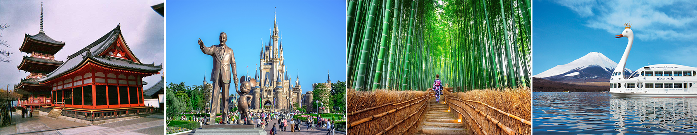

SÔI ĐỘNG HÈ NHẬT BẢN 2023
CUNG ĐƯỜNG VÀNG: KOBE - OSAKA - KYOTO - NAGOYA - YAMANASHI - TOKYO
Thời gian: 6 Ngày 5 Đêm
Phương tiện: Hàng không Vietnam Airlines, bay từ TP HCM
Khởi hành: 03, 10, 17, 24/06 ; 01, 08, 15, 22, 29/07 ; 05, 12, 19, 26/08 ; 02, 09, 16, 23/09
